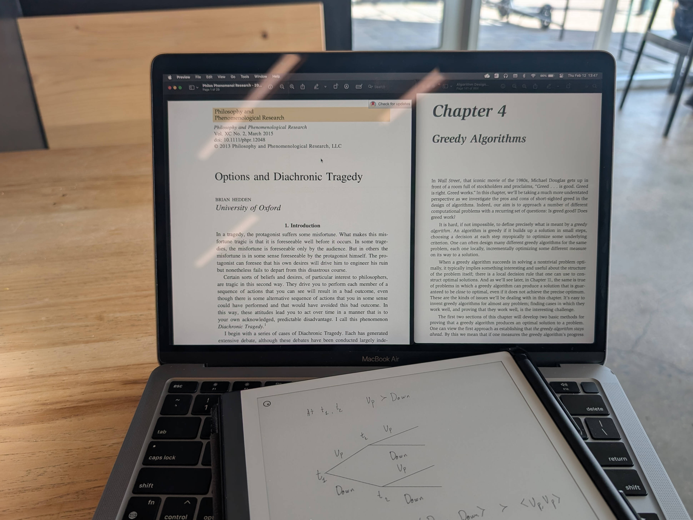

Greedy Algorithms and Diachronic Tragedy

This is going to be a short one but I figure I still want to push something into the aether every month; it’s good practice for getting more comfortable writing publicly and without excessive indecision.
Right now, in my algorithms class, we just finished covering greedy algorithms, and one quote from lecture that stuck with me was something along the lines of, “Just like in real life, choosing the best option in the moment may not be the optimal strategy for the long-term”.
At the same time, in one of my philosophy courses we’re reading about what Brian Hedden dubs ‘The Diachronic Tragedy’ - the undesirable outcome that occurs when one’s preferences lead them to make choices desirable in individual instances (synchronically), but are undesirable in the bigger picture through time (diachronically). The over-arching example goes something like this:
Suppose you have two choices: up, and down, at two times: t1, and t2. At individual instances t1 and t2 you always prefer going up to going down, no matter what you decide(d) to do before / after. However, overall, you would actually prefer down, down over up, up (for a wide variety of reasons that can be applicable across different cases, this is just a simplification of the idea). So, your making desirable choices at individual instances lead to an undesirable sequence of choices across those instances combined.18
Hedden argues that holding beliefs that lead to a diachronic tragedy are not irrational inherently due to that property. I find this interesting in the case of greedy algorithms because in our problems we have clearly defined objectives that our solution should be optimal for. Thus, we can make exchange arguments or present counter-examples as to why a greedy solution (which may involve a set of actions that would be considered as leading to diachronic tragedy) is or isn’t optimal.
I think a lot of my own actions may be considered preferrable in the moment, but undesirable across time, according to my own beliefs. From the perspective of my algorithms class, they would be considered similar to a non-optimal greedy strategy. However, from the philosophical question of rationality, it is up for debate? I don’t know, but I do have a lot homework due so that’s all for now.
- Hedden, Brian. “Options and Diachronic Tragedy.” Philosophy and Phenomenological Research 90, no. 2 (2015): 423–51. https://doi.org/10.1111/phpr.12048.